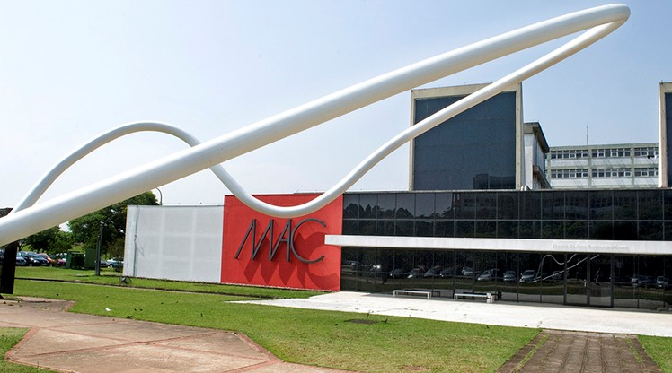

O Museu de Arte Contemporânea de Pernambuco (MAC-PE) está localizado no antigo Mosteiro de São Bento, em Olinda. Fundado em 1966, o museu é um dos principais centros culturais do estado, reunindo um acervo diversificado de arte moderna e contemporânea. Desde sua inauguração, o MAC-PE tem se dedicado a promover a arte contemporânea, servindo como um espaço de reflexão e diálogo sobre as diversas manifestações artísticas. O museu foi idealizado por um grupo de artistas e intelectuais que buscavam um espaço para a arte moderna em um estado rico em história e cultura.
O prédio histórico, que data do século XVIII, é uma atração por si só, com sua arquitetura barroca contrastando com as obras de arte contemporâneas expostas em seu interior. Essa combinação única faz do MAC-PE um espaço de diálogo entre o passado e o presente, onde a história se encontra com a inovação artística. Os visitantes podem explorar não apenas as obras, mas também a rica história do mosteiro, que foi um importante centro religioso e cultural em sua época. A preservação dos elementos arquitetônicos originais, como os altares, as paredes de pedra e os azulejos portugueses, proporciona uma experiência imersiva que encanta tanto os amantes da arte quanto os interessados em história. O museu também é um exemplo de como a arte contemporânea pode coexistir harmoniosamente com o patrimônio histórico.
O acervo do MAC-PE conta com mais de 1.200 obras, incluindo pinturas, esculturas, gravuras, fotografias e instalações. Entre os artistas representados estão nomes importantes da arte pernambucana, nacional e internacional. O museu se destaca por sua curadoria cuidadosa, que busca refletir a diversidade e a riqueza da produção artística contemporânea. Obras de artistas renomados, como Tunga, Cícero Dias e Vicente do Rego Monteiro, fazem parte do acervo, além de peças de novos talentos que estão emergindo no cenário artístico. O MAC-PE também abriga coleções que exploram a arte brasileira sob diferentes perspectivas, incluindo a arte popular e a arte indígena, promovendo um diálogo entre diferentes culturas e estilos.
Além do acervo permanente, o museu promove exposições temporárias que destacam novas tendências artísticas e oferecem espaço para artistas emergentes. Essas exposições são acompanhadas de palestras, oficinas e eventos culturais, proporcionando uma plataforma para discussões sobre arte e sociedade. O MAC-PE também se envolve com a comunidade local através de projetos educativos que buscam aproximar o público da arte contemporânea, incentivando a criatividade e a expressão artística entre os jovens e adultos. O museu frequentemente realiza programas voltados para escolas, oferecendo visitas guiadas e atividades práticas que estimulam o interesse pela arte e pela cultura.
O MAC-PE está localizado no centro histórico de Olinda, próximo a outras atrações turísticas, como a Igreja de São Bento e o Alto da Sé. É possível chegar de carro, táxi ou transporte público, como ônibus e metrô. Para quem está explorando a cidade a pé, o museu é facilmente acessível pelas ladeiras históricas, que oferecem vistas deslumbrantes da cidade e do mar. Além disso, a região é rica em cultura e história, tornando a visita ao MAC-PE uma oportunidade de explorar outros pontos turísticos nas proximidades. Para facilitar o deslocamento, recomenda-se o uso de aplicativos de transporte, especialmente durante os horários de pico, quando o movimento na cidade aumenta consideravelmente. O museu também é um local ideal para iniciar um passeio pela cidade, permitindo que os visitantes descubram a rica herança cultural de Olinda.